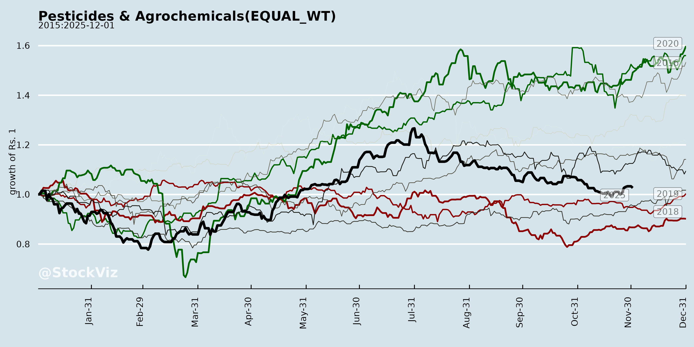
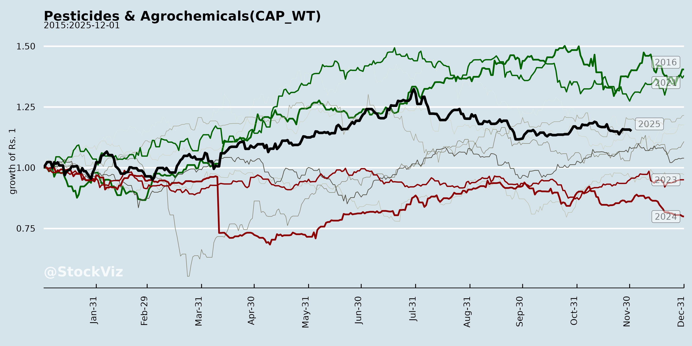
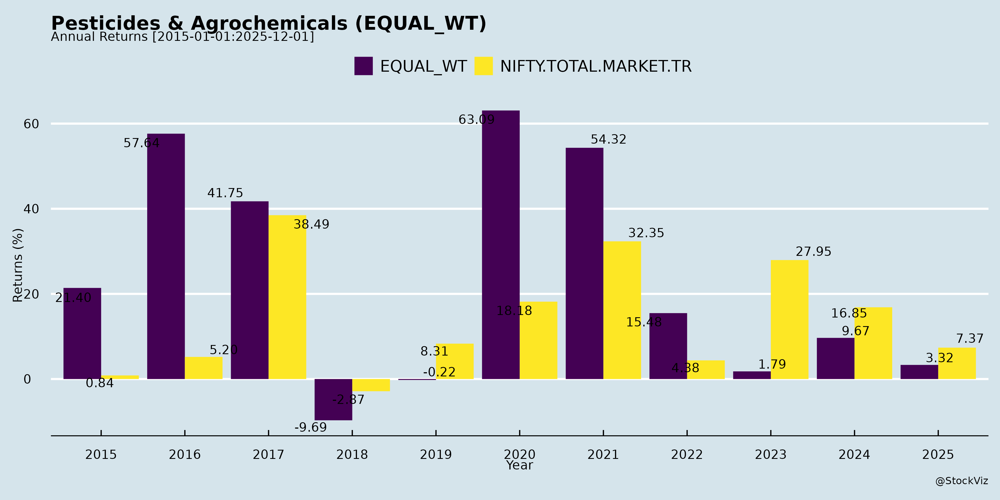
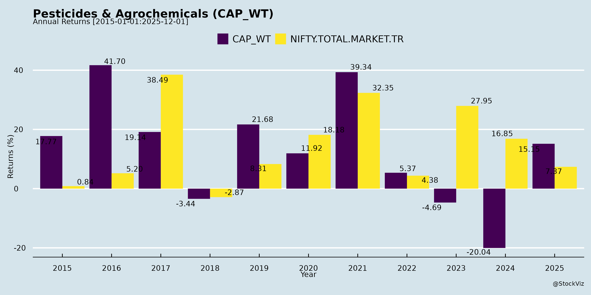
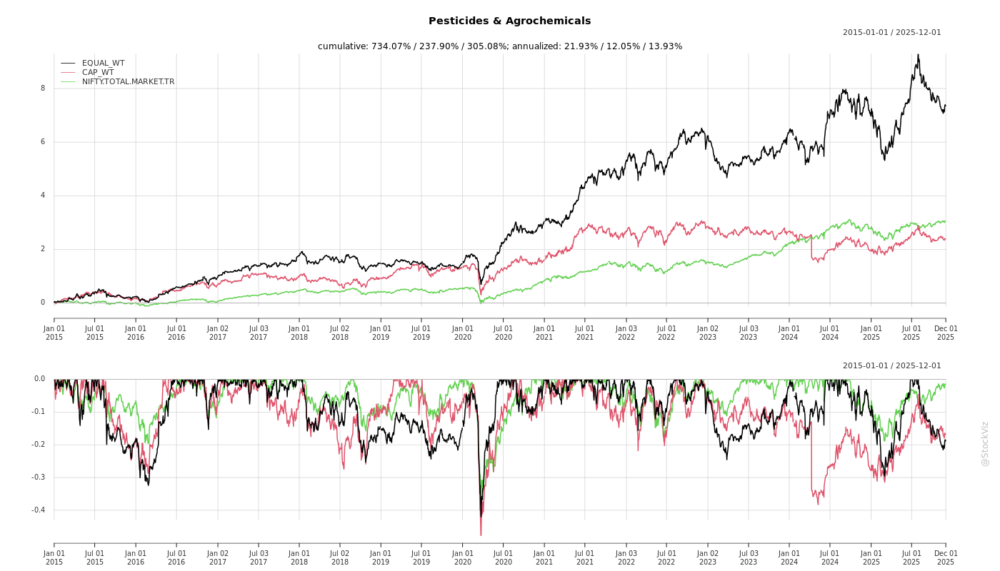
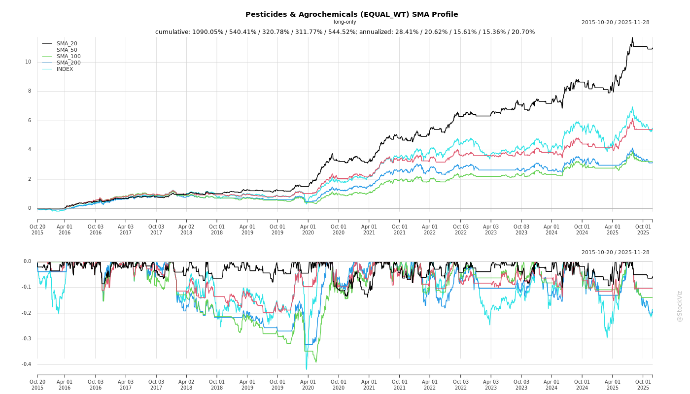
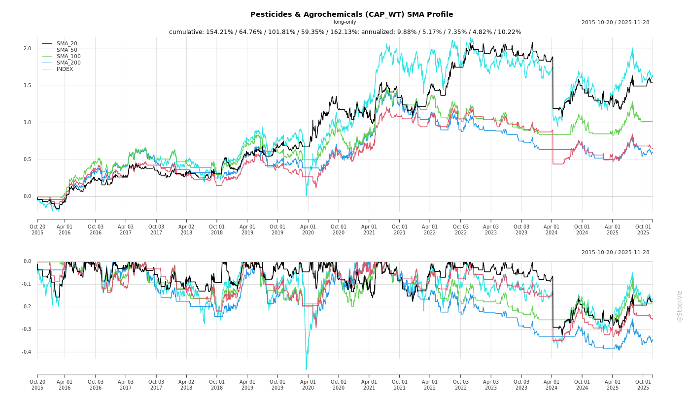
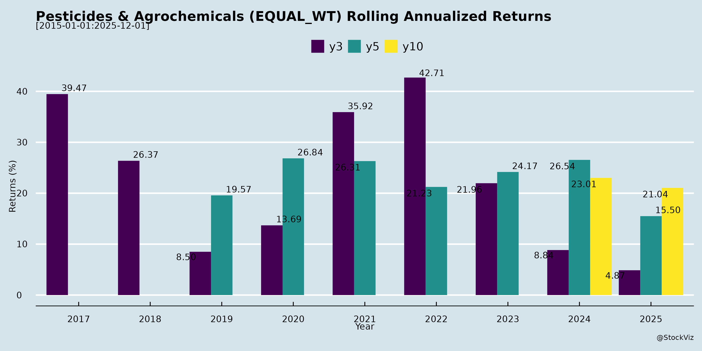
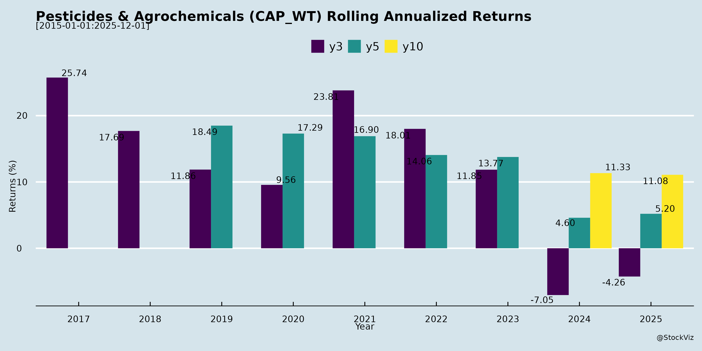

Annual Returns




Cumulative Returns and Drawdowns

SMA Scenarios


Current Distance from SMA
Rolling Returns


EBIT (% of Industry Total)
Revenue (% of Industry Total)
AI Summaries
Analyst
asof: 2025-11-29
Summary Analysis: Indian Pesticides & Agrochemicals Sector (Based on Q2/H1 FY26 Earnings Transcripts & Announcements)
The sector faced a challenging Kharif season but remains resilient, with companies like Sumitomo Chemical India, Dhanuka Agritech, Insecticides India, and India Pesticides reporting flat-to-moderate growth (e.g., Sumitomo: 9% H1 revenue growth; India Pesticides: 26% H1 growth driven by exports). Key themes from UPL, PI Industries, Sharda, Rallis, Bharat Rasayan, Bhagiradha, Meghmani, Punjab Chemicals, and others highlight weather as the primary drag, offset by export recovery and Rabi optimism. Overall, H1 EBITDA margins held steady (13-22% range), with focus on specialty products, backward integration, and farmer engagement.
Headwinds (Short-term Challenges)
- Erratic Weather & Crop Disruptions: Prolonged heavy rains (July-Sept 2025) restricted field access, reduced pesticide sprays, caused crop losses (e.g., paddy, soybean, cotton), and delayed harvesting. Led to high sales returns (Insecticides: ₹150cr; Dhanuka: herbicides hit hardest) and channel inventory buildup. Impacted domestic volumes (Sumitomo: Q2 revenue down 6%; Dhanuka: flat H1).
- Regulatory Hurdles: Biostimulant sales halted mid-June due to new guidelines (only 145 approved); affected 2-3% of sales (Dhanuka: >₹20cr hit; Insecticides/Barrix impacted).
- Export Volatility: Muted demand/shipment deferrals in Africa/LatAm (Sumitomo: exports down 4% H1); competition from low-cost China.
- Working Capital Strain: Elevated inventory/receivables (Insecticides: inventory >₹700cr); slower collections amid weak Kharif.
Tailwinds (Positive Supports)
- Rabi Season Setup: Full reservoirs, moist soil, and normal monsoon withdrawal signal strong demand recovery for wheat, pulses, maize (all companies optimistic; e.g., Sumitomo expects rebound).
- Export Stabilization: Global destocking easing; demand uptick in US/Europe/Australia (India Pesticides: exports doubled to ₹140cr Q2; Insecticides: full order book).
- Product Innovation & Launches: 5-10 new products/season (e.g., Sumitomo: Lentigo, Excalia Max; Insecticides: Sparcle, Altair; Dhanuka: Ipflufenoquin). Shift to specialty/patented (65-70% portfolio mix).
- Capacity & Cost Discipline: Backward integration (Sumitomo: Dahej ₹250-300cr; Dhanuka: Dahej scaling; India Pesticides: 2,6-DEA) and high utilizations (73%+ technicals). Gross margins stable (40-43%).
- Government Push: Anti-dumping duties, Atmanirbhar Bharat aiding import substitution.
Growth Prospects (Medium-to-Long Term)
- Domestic Rebound: Rabi to drive H2 (2-11% expected growth); farmer programs (e.g., Sumitomo’s EDFD) and digital engagement to boost specialty uptake. Targets: Double-digit topline (Insecticides); flat-to-low single-digit CAGR sustained.
- Exports Scaling: 40-45% mix target (India Pesticides); new markets/registrations (Sumitomo: Africa/Asia). Global supply chain shifts from China favor India.
- Specialty & Integration: Premiumization (Maharatna/FM >65% mix); CR-DMO/tie-ups (Insecticides-Corteva; Dhanuka-Bayer). Long-term: India Pesticides ₹3,000cr by FY30-31; Shalvis ₹100cr FY27.
- Capex-Led Expansion: ₹50-600cr investments (e.g., Sumitomo Dahej; PI Industries). EBITDA margins to sustain/improve to 18-22% with leverage.
Key Risks (Ongoing Concerns)
- Weather Volatility: La Niña/intermittent rains could disrupt Rabi (e.g., Punjab/Haryana delays).
- Regulatory Uncertainty: Biostimulant delays; new molecule approvals (5-6yr timeline).
- Competition & Pricing: Chinese generics erode margins; channel destocking pressures.
- Execution Risks: Capex delays (e.g., Dahej timelines); working capital cycles (target reductions: India Pesticides 20-30 days).
- Geopolitical/Macro: US tariffs, LatAm channel pressures, global slowdown.
Overall Outlook: Sector poised for H2 recovery (Rabi-led), with 10-20% FY26 growth feasible for leaders. Long-term drivers (exports, specialty, integration) support 15%+ CAGR, but weather/regulatory risks cap near-term upside. Focus on cash generation (e.g., Sumitomo ₹2,000cr+ cash) and discipline key to navigating cycles.
General
asof: 2025-11-30
Summary Analysis: Indian Pesticides & Agrochemicals Sector
Based on the provided regulatory filings from key players (UPL, Dhanuka Agritech, India Pesticides, Meghmani Organics, etc.), the sector shows resilience amid restructuring, regulatory protections, and expansion efforts. However, financial pressures and compliance burdens are evident. Below is a structured analysis of headwinds, tailwinds, growth prospects, and key risks.
Tailwinds (Positive Factors)
- Anti-Dumping Duties on Chinese Imports: Ministry of Finance imposed 5-year anti-dumping duties (USD 1,246–2,018/MT) on Pretilachlor and intermediate PEDA from China (India Pesticides filing). This shields domestic producers from subsidized imports, aligning with “Atma Nirbhar Bharat” and restoring competitive pricing.
- International Expansion: Meghmani Organics incorporated a wholly-owned subsidiary in Brazil (capital ~USD 10K) for commercialization, import/export, and distribution of pesticides—targeting high-growth emerging markets.
- Capacity & Synergy Enhancements: Dhanuka approved land purchase in Nagpur for a new formulation plant (post-due diligence). UPL’s internal realignment integrates Decco (post-harvest, FY25 revenue INR 933 Cr) with Advanta Seeds (~US$502 Mn valuation), promising synergies in shared infrastructure, digitization, and emerging markets.
- ESG Momentum: Rising ESG ratings (Rallis: 56/100; NACL: Crisil ESG 51) signal improving sustainability focus, aiding access to global finance and investor appeal.
- Routine Governance: Widespread secretarial auditor appointments (Sumitomo, Sharda) comply with SEBI Reg 24A, reflecting proactive regulatory alignment.
Headwinds (Challenges)
- Financial Moderation: Dhanuka’s H1 FY26 results show revenue dip (INR 1,126 Cr vs. 1,148 Cr YoY) and profit decline (INR 149 Cr vs. 166 Cr YoY), driven by monsoon/crop dependency, inventory buildup (up INR 79 Cr), and receivables surge (INR 162 Cr increase)—signaling working capital strain.
- Business Restructuring Pressures: UPL’s Decco sale (related party, shareholder approval pending) may cause short-term disruptions despite long-term synergies.
- Compliance & Administrative Burden: Multiple filings for auditor changes, RTA name updates (Bharat Rasayan: Link Intime → MUFG Intime), KYC/share re-lodgement advisories (Punjab Chemicals), and AGM communications (PI Industries) indicate rising regulatory overheads under SEBI LODR.
Growth Prospects
- Domestic Protection + Export Push: Anti-dumping duties could boost margins for Pretilachlor producers; Brazil entry (Meghmani) taps USD 3–5 Bn agrochem market with 8–10% CAGR.
- Capacity Expansion: Dhanuka’s new plant enhances formulation capabilities amid INR 2 Tn domestic market (projected 10–12% CAGR to FY30, per industry trends).
- Integration & Efficiency: UPL’s Decco-Advanta merger leverages overlapping markets/tech for “significant upside” via cost savings and leadership.
- Sustainability Edge: ESG improvements position firms for green financing/export approvals (e.g., EU regulations).
- Overall Sector Outlook: Strong monsoon (if realized) + govt. farm schemes could drive 8–10% volume growth; no major subsidiaries in some firms (Dhanuka) simplifies reporting but highlights organic focus.
Key Risks
- Regulatory & Approval Delays: UPL’s transaction (material RPT), Astec’s RPTs with Godrej Agrovet, and director re-appointments need shareholder nods—non-approval could disrupt plans.
- Commodity/Weather Volatility: Dhanuka notes explicit monsoon/pest/crop dependency; H1 inventory/receivables pressure could worsen if demand softens.
- Geopolitical/Import Competition: While anti-dumping helps, residual China reliance (80%+ technicals) poses supply risks; Brazil venture exposed to forex/political instability.
- ESG & Compliance Gaps: Mid-tier ESG scores (51–56) risk premium pricing/funding hurdles; peer-reviewed auditor mandates add costs.
- Execution Risks: New plants/subsidiaries (Dhanuka, Meghmani) face capex overruns, title/approval delays; UPL divestment at ~US$502 Mn hinges on adjustments.
Overall Verdict: Moderate Growth (7–9% near-term) with tailwinds from protectionism/expansion outweighing headwinds. Focus on execution, ESG, and monsoons critical. Sector resilient but sensitive to macros. (Data as of filings up to Nov 2025.)
Investor
asof: 2025-11-29
Analysis of Indian Pesticides & Agrochemicals Sector
Using the provided documents (earnings transcripts, announcements, and investor meets from companies like UPL, PI Industries, Sumitomo Chemical India, Dhanuka Agritech, Insecticides India, India Pesticides Ltd., Punjab Chemicals, etc.), I’ve analyzed the sector’s headwinds, tailwinds, growth prospects, and key risks. The analysis is based on Q2/H1 FY26 performance (ended Sep 2025), management commentary, and forward guidance. The sector faced a challenging Kharif due to weather but shows resilience in exports and Rabi optimism.
Headwinds (Key Challenges in H1 FY26)
- Erratic Weather & Crop Disruptions: Prolonged heavy rains (Jul-Sep) across India restricted field access, delayed spraying, and caused crop losses (e.g., paddy, soybean, cotton). Herbicides hit hardest (e.g., Sumitomo: volume contraction; Dhanuka: specialty herbicides down; Insecticides: Rs150 Cr returns). Harvest delays pushed Rabi sowing back.
- Regulatory Hurdles: Biostimulant regulations halted sales (145 approved; Dhanuka: >Rs20 Cr hit; Insecticides/Barrix impacted). New rules added compliance delays.
- Channel & Inventory Issues: High sales returns (e.g., Insecticides: Rs150 Cr; Dhanuka: up to 13.5%; industry-wide destocking). Elevated channel inventory slowed new orders.
- Pricing & Competition Pressures: Global destocking (2 years) bottomed prices; Chinese competition in generics (e.g., Sumitomo competes via R&D). Domestic pricing discipline held but volumes suffered.
- Export Volatility: Muted demand in Africa/LatAm (e.g., Sumitomo: Brazil deferrals; PI Industries: shipment delays).
Impact: Most firms reported flat/declining domestic revenues (e.g., Sumitomo: -6% Q2; Dhanuka: flat H1). EBITDA margins held (22-24%) via cost control but PAT dipped.
Tailwinds (Positive Factors Supporting Resilience)
- Rabi Season Setup: Full reservoirs, moist soil, and normal monsoon withdrawal boost outlook (e.g., Sumitomo, Dhanuka, Insecticides optimistic). Wheat/pulses/maize expected to drive H2 recovery.
- Export Recovery: Global stabilization post-destocking (e.g., India Pesticides: exports doubled to Rs140 Cr; Insecticides: 4% mix, targeting Rs150 Cr). Demand up in Europe/US/Australia/Japan.
- Operational Discipline: Premiumization (specialty/patented products: 65-70% mix in Insecticides); backward integration (e.g., Sumitomo Dahej/Tarapur; Dhanuka Bifenthrin/Difenoconazole); capacity expansions (India Pesticides: formulations to 10KT).
- New Launches & Innovation: Traction in products like Excalia Max/Lentigo (Sumitomo), Sparcle/Altair (Insecticides), Wardu (Dhanuka). Collaborations (e.g., Corteva, Nissan).
- Financial Strength: Debt-free/strong balance sheets (e.g., Sumitomo: Rs2,089 Cr cash; India Pesticides: zero debt). Improving WC (e.g., 7-day drop YoY).
- Policy Support: Atmanirbhar Bharat aids import substitution (e.g., antidumping duties).
Impact: H1 growth in select firms (e.g., India Pesticides: +26% revenue, 18.6% EBITDA; Insecticides: +2% Q2 revenue).
Growth Prospects (Medium-Term Outlook: FY26-30)
- Domestic: Rabi rebound (2-11% H2 growth guided); farmer engagement/digital tools (e.g., Sumitomo’s EDFD). Specialty shift (8-10% new product contribution).
- Exports: 40-45% mix target (e.g., India Pesticides); normalization in LatAm/Africa/Asia. CDMO/CRAMS potential (e.g., Sumitomo semiconductor).
- Capacity & Integration: Expansions to drive scale (e.g., Sumitomo: Rs500-600 Cr Dahej; India Pesticides: Rs3,000 Cr by FY31; Dhanuka Dahej breakeven FY27).
- Diversification: Biostimulants recovery post-regs; new segments (semiconductors, pharma via Sumitomo group). Shalvis (India Pesticides): Rs100 Cr FY27.
- Guidance: Double-digit revenue growth (e.g., Insecticides); 20%+ CAGR targeted by leaders. EBITDA 18-22%; ROCE improving (18.8% Q2 India Pesticides).
Overall Projection: Sector FY26 revenue flat-to-mid single-digit domestic + strong exports = 10-20% consolidated growth for premium players.
Key Risks
- Weather Sensitivity: La Nina/intermittent rains/cyclones (e.g., recent impacts in Punjab/AP) could disrupt Rabi.
- Regulatory/Policy Shifts: Biostimulant delays; new molecules take 2-5 years (e.g., Sumitomo).
- Geopolitical/Trade: US tariffs (Sumitomo); China dumping despite duties.
- Financial: WC strain (high inventory/receivables); capex execution delays (e.g., Dahej timelines).
- Competition: Generics erode margins; channel liquidation slows demand.
- Execution: New plant ramp-up (e.g., Dhanuka FY27 breakeven); product adoption in tough seasons.
Summary
The Indian agrochem sector navigated a “disappointing Kharif” (heavy rains, low volumes) with resilience via exports (+50-100% in leaders) and margin discipline (18-24% EBITDA). Tailwinds like Rabi moisture, global recovery, and expansions outweigh headwinds (weather, regs), positioning for H2/FY26 recovery (10-20% growth). Growth hinges on specialty premiumization, exports (40%+ mix), and Rs1,000-3,000 Cr ambitions by FY27-31. Risks remain weather/trade-dependent, but strong BS/cash buffers mitigate. Premium players (e.g., Sumitomo, India Pesticides) outperform generics via innovation/integration. Outlook: Cautiously Optimistic for FY26 (double-digit topline, steady margins).
Press Release
asof: 2025-11-29
Indian Pesticides & Agrochemicals Sector Analysis
Based on the provided press releases and financial results from key players (UPL, PI Industries, Sharda Cropchem, Dhanuka Agritech, Rallis India, NACL Industries, Insecticides India, Astec LifeSciences, India Pesticides, Meghmani Organics, Punjab Chemicals, and Heranba Industries) for Q2/H1 FY26 (as of Sep 2025), here’s a synthesized analysis of the sector. The sector shows resilience amid challenges, with mixed performance: aggregate revenue growth ~5-25% YoY in most firms, EBITDA margins improving 200-700 bps, driven by volumes, pricing recovery, and new products. However, weather and macros create volatility.
Headwinds (Challenges)
- Adverse Weather & Crop Disruptions: Erratic rainfall, floods, and uneven monsoons led to crop losses, delayed pesticide application, and subdued demand (e.g., PI Industries: 16% Q2 revenue decline; Insecticides India: restricted farmer access; UPL SAS: 10% decline due to weather).
- Revenue Volatility: Declines in some segments (PI: Agchem exports -18%; Astec: 26% Q2 drop; Meghmani Pigments: 15% down; Sharda Non-Agro: 11% Q2 dip).
- Regulatory & Market Transitions: Delays in biologicals registrations (PI); pricing pressures in generics; inventory buildup from Chinese dumping (Meghmani TiO2).
- Macro/Geopolitical Pressures: US tariffs, global innovator challenges, biotech funding slowdowns (PI Pharma); higher working capital/interest costs (Insecticides).
- Input Cost Fluctuations: High RM prices in pigments/TiO2 (Meghmani); though stabilizing in others.
Tailwinds (Positive Factors)
- Volume & Pricing Recovery: Strong volume growth (Sharda: 35% Q2; India Pesticides: 22%; UPL: 8% revenue on volumes/FX). Pricing stabilization and better mix drove gross margins up 500-700 bps (Sharda, UPL, PI).
- Margin Expansion: EBITDA margins improved significantly (UPL: +410 bps to 18.3%; Sharda: +450 bps to 15%; India Pesticides: +167 bps to 18.3%; Meghmani: +490 bps to 12.6%).
- Export Strength: NA (UPL +63% Q2; Sharda +69%), Europe/LATAM growth; China+1 derisking benefits (PI).
- Operational Discipline: Debt reduction (UPL: net debt -₹3,729 Cr), high liquidity (PI debt-free), capacity utilization improvements.
- Innovation & Launches: 20+ new products/pipelines (PI, UPL, Insecticides: 5 launches); partnerships (Rallis-Paryan for herbicide tech; Insecticides-Corteva/Nissan).
Growth Prospects
- H2/FY26 Outlook: Strong Rabi season (favorable reservoirs/sowing); upgraded guidance (UPL EBITDA 12-16%). Expected revenue acceleration from expansions (Heranba: ₹375-475 Cr; Punjab Chemicals: ₹120-150 Cr new products; India Pesticides: formulation +3,500 MT).
- Capacity & Backward Integration: Expansions/commissioning (PI, India Pesticides, Meghmani Nano Urea trials, Heranba Sarigam Phase-II); new facilities for exports (Punjab Chemicals: Rs.60 Cr investment).
- Diversification: Biologicals/pharma/CRDMO scaling (PI, Meghmani); seeds/post-harvest (UPL Advanta +26%); formulations/brands (Dhanuka 16% FY growth).
- Exports & Premiumization: 75-85% export reliance (Meghmani, UPL); new markets/tech (Rallis DSR rice tech saves 25-30% water).
- Sustainability/ESG: Rising focus (PI S&P Yearbook; UPL de-gearing/ratings upgrade); potential 15-20% sector CAGR medium-term via new molecules/regulatory tailwinds.
| Revenue Growth |
5-26% |
Positive |
| EBITDA Margin |
13-18% |
+200-700 bps |
| PAT Growth |
6-402% |
Strong |
Key Risks
- Weather/Seasonality: High dependency on monsoons/Rabi; potential El Niño-like disruptions.
- Regulatory/Compliance: Delays in approvals (biologicals, exports); tariff/dumping duties (US/EU/China).
- Commodity Volatility: RM/input prices (TiO2, chemicals); FX fluctuations (UPL cites FX support).
- Demand/Competition: Pricing wars in generics; inventory overhang; innovator patent cliffs delays.
- Execution/Financial: Capex ramp-up (Rs.250-500 Cr across firms); working capital strain; debt/gearing (UPL 2.7x, though improving).
- Geopolitical: Trade wars, supply chain risks (China+1 incomplete).
Overall Summary: The sector is in recovery mode post-FY25 troughs, buoyed by volumes (10-35%), margins (via mix/cost control), and capex (₹500+ Cr). Tailwinds from exports (NA/Europe), new launches, and Rabi outweigh headwinds like weather. Growth prospects solid at 10-20% FY26 (led by UPL/PI/Sharda), but risks from macros/weather persist. Investors should monitor Q3 Rabi traction and regulatory filings for sustained momentum.
Copyright © 2023 SAS Data Analytics Pvt. Ltd. All rights reserved.
🐞